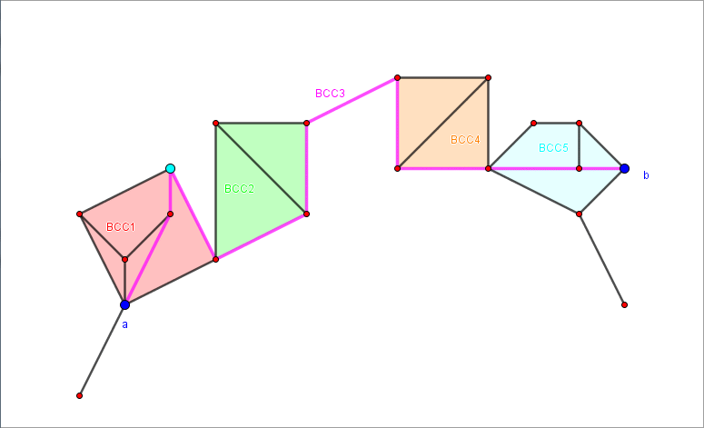

Cyberland 有 $n$ 座城市，编号从 $1$ 到 $n$，有 $m$ 条双向道路连接这些城市。第 $j$ 条路连接城市 $a_j$ 和 $b_j$。每天，都有成千上万的游客来到 Cyberland 游玩。
在每一个城市，都有纪念品售卖，第 $i$ 个城市售价为 $w_i$。这个售价有时会变动。
每一个游客的游览路径都有固定起始城市和终止城市，且不会经过重复的城市。
他们会在路径上的城市中，售价最低的那个城市购买纪念品。
你能求出每一个游客在所有合法的路径中能购买的最低售价是多少吗？
你要处理 $q$ 个操作：
C a w: 表示 $a$ 城市的纪念品售价变成 $w$。A a b: 表示有一个游客要从 $a$ 城市到 $b$ 城市，你要回答在所有他的旅行路径中最低售价的最低可能值。第一行包含用一个空格隔开的三个正整数 $n, m, q$ ($n, m, q \leq 10^5$)。
接下来 $n$ 行，每行包含一个正整数 $w_i$ ($w_i \leq 10^9$)。
接下来 $m$ 行，每行包含用一个空格隔开的两个数 $a_j, b_j$ ($1 \leq a_j, b_j \leq n, a_j \neq b_j$)。
数据保证没有两条道路连接同样一对城市，也没有一条道路两端是相同的城市。并且任意两个城市都可以相互到达。
接下来 $q$ 行，每行是 C a w 或 A a b ，描述了一个操作。
对于每一个 A 类操作，输出一行表示对应的答案。
注意到题目中连接两点 (起始城市和终止城市) 之间的是路径 (path)，所以可以考虑使用点双连通分量 + 缩点。
像强连通分量一样，一个点双连通分量中的点是可以任意到达的 (而不经过重复点)。因此对询问 $a, b$，我们记 $a, b$ 缩点后为 $A, B$，那么答案就是 "缩点后 $A$ 到 $B$ 的路径上的点" 所对应的原来的那些点的权值最小值。
是不是很绕？看个图就明白了。
不过需要注意的是，按照边双连通分量缩点后的图就是一棵标准的树，而按照点双连通分量缩点后的图就不是一棵标准的树，因为有这么一些捣蛋鬼——割点。
可以看出，一个割点同时属于多个点双连通分量。因此如果询问点是割点的话，就不怎么好处理了。
比如上面图中的点 $a$，它只能走上面的双连通分量 (图中的 BCC1)，而不能走下面的双连通分量。但是如果询问的 $b$ 点在下方，那么我们选的点 (青色的点) 只能在下方而不能在上方 (BCC1)。
因此，在点双 (点双连通分量) 缩点中，需要对割点进行特殊处理。
我们可以采用如下策略：像仙人掌的圆方树一样，我们对于每个点双新建一个点 $b$。将该点双中所有的点与点 $b$ 相连，如下图所示。那么对于割点来说，它可能与多个点双对应的 $b$ 点相连。
于是我们就得到了一棵树 (对仙人掌来说，这就是与那个仙人掌一一对应的圆方树)。这就是点双缩点的基本策略。(其实我们并没有缩点，反而将点数翻了一倍)
记点双对应的 $b$ 点 (即上图中的粉色点) 的权值为与它相邻的点 (肯定都是红点) 的权值的最小值。此时，对任意一对询问点 $a, b$，在对应树上连接 $a, b$ 的路径中的点权的最小值，就是我们要的答案。
于是我们成功将原题转化为了一道树上查询点权最小值的题目，考虑到有修改，可以使用树链剖分 + 线段树解决 (当然如果你写 LCT 我也不反对)。
不过到这还没完。考虑到粉色点的点权不是独立的，而是联动的 (即随着红色点点权的变化而变化)，因此修改一个红点，就会影响到粉色点的点权。那么如果这个红点是割点呢？如果原图是菊花图呢？那么修改的粉色点的个数将会达到 $O(n)$！显然不能接受。
因此我们只能修改粉色点权值的定义。我们考虑将这棵树转化为有根树，由于每条树边都是连接一个红色点和一个粉色点，因此每个粉色点有若干个红色子节点和一个红色父节点。我们让这个粉色点的权值定义为它的红色子节点的权值的最小值。这样每修改一个红色点，只需要更改的它的粉色父节点的值即可。
最后询问的时候，如果它们的 LCA 是粉色节点 $b$，由于这个点 $b$ 已经不含它的红色父节点的信息了，因此我们还需要将答案与 $b$ 的红色父节点 $p(b)$ 的权值取 $\min$。
最后，对于每个粉色节点，需要维护一个平衡树 multiset <int>，来维护它的红色子节点的权值的最小值 (好像用堆也可以？)，时间复杂度 $O \left( n \log^2 n \right)$ (别怕，树剖的 $\log^2 n$ 是虚的)。
#include <bits/stdc++.h>
using namespace std;
typedef multiset <int> mset;
const int N = 100034;
int V, V2, E, q;
int u, v;
int w[N << 1];
mset s[N];
inline void down(int &x, const int y) {x > y ? x = y : 0;}
namespace ST{
#define segc int M = L + R - 1 >> 1, lc = id << 1, rc = lc | 1
const int N = ::N << 3;
int x[N], pre[N];
void build(int id, int L, int R){
if(L == R) {x[id] = pre[L]; return;}
segc; build(lc, L, M); build(rc, M + 1, R);
x[id] = min(x[lc], x[rc]);
}
void adj(int id, int L, int R, int h, int v){
if(L == R) {x[id] = v; return;}
segc; h <= M ? adj(lc, L, M, h, v) : adj(rc, M + 1, R, h, v);
x[id] = min(x[lc], x[rc]);
}
int range(int id, int L, int R, int ql, int qr){
if(ql <= L && R <= qr) return x[id];
segc, s = INT_MAX;
if(ql <= M) down(s, range(lc, L, M, ql, min(qr, M)));
if(qr > M) down(s, range(rc, M + 1, R, max(ql, M + 1), qr));
return s;
}
}
namespace Tree{
const int N = ::N << 1, M = N << 1;
int V = 0, E, to[M], first[N], next[M];
int p[N], dep[N], size[N];
int id[N], prf[N], top[N];
inline void addedge(int u, int v){
to[++E] = v; next[E] = first[u]; first[u] = E;
to[++E] = u; next[E] = first[v]; first[v] = E;
}
void dfs_wt(int x){
int i, y, &z = prf[x]; size[x] = 1;
for(i = first[x]; i; i = next[i])
if((y = to[i]) != p[x]){
p[y] = x; dep[y] = dep[x] + 1;
dfs_wt(y);
size[y] > size[z] ? z = y : 0;
size[x] += size[y];
}
}
void dfs_hld(int x, int r){
int i, y;
id[x] = ++V; top[x] = r;
if(!prf[x]) return;
dfs_hld(prf[x], r);
for(i = first[x]; i; i = next[i])
if(!top[y = to[i]])
dfs_hld(y, y);
}
int solve(int u, int v){
int x = top[u], y = top[v], res = INT_MAX;
for(; x != y; u = p[x], x = top[u]){
if(dep[x] < dep[y]) {swap(u, v); swap(x, y);}
down(res, ST::range(1, 1, V, id[x], id[u]));
}
if(dep[u] > dep[v]) swap(u, v);
down(res, ST::range(1, 1, V, id[u], id[v]));
if(u > ::V) down(res, w[p[u]]);
return res;
}
}
namespace Graph{
#define stack scx
const int N = ::N, M = N << 1;
int V, E, to[M], first[N], next[M];
int cnt = 0, id[N], low[N];
int top = 0, stack[N];
int bcc_cnt = 0;
inline void addedge(int u, int v){
to[++E] = v; next[E] = first[u]; first[u] = E;
to[++E] = u; next[E] = first[v]; first[v] = E;
}
void dfs_vbcc(int x, int px){
int i, y, z;
id[x] = low[x] = ++cnt; stack[top++] = x;
for(i = first[x]; i; i = next[i])
if(!id[y = to[i]]){
dfs_vbcc(y, x);
down(low[x], low[y]);
if(id[x] <= low[y])
for(Tree::addedge(++bcc_cnt + V, x), z = 0; z != y; )
Tree::addedge(bcc_cnt + V, z = stack[--top]);
}else if(y != px)
low[x] = min(low[x], id[y]);
}
}
inline void update(int x) {w[x + V] = *s[x].begin();}
int main(){
int i, j;
scanf("%d%d%d", &V, &E, &q);
for(i = 1; i <= V; ++i) scanf("%d", w + i); Graph::V = V;
for(i = 1; i <= E; ++i) {scanf("%d%d", &u, &v); Graph::addedge(u, v);}
Graph::dfs_vbcc(1, 0); V2 = Graph::bcc_cnt;
Tree::dfs_wt(1); Tree::dfs_hld(1, 1);
for(i = 1; i <= V; ++i)
if(Tree::p[i] > V) s[Tree::p[i] - V].insert(w[i]);
for(i = 1; i <= V2; ++i) update(i);
for(i = 1; i <= Tree::V; ++i) ST::pre[Tree::id[i]] = w[i];
ST::build(1, 1, Tree::V);
for(j = 0; q; --q)
if(scanf("%s%d%d", &j, &u, &v), j == 67){
if(w[u] == v) continue;
if((i = Tree::p[u] - V) > 0){
mset::iterator it = s[i].find(w[u]);
s[i].erase(it); s[i].insert(v); update(i);
ST::adj(1, 1, Tree::V, Tree::id[i + V], w[i + V]);
}
w[u] = v;
ST::adj(1, 1, Tree::V, Tree::id[u], v);
}else
printf("%d\n", Tree::solve(u, v));
return 0;
}
坑1：此题需要注意各种数组的大小问题。注意缩点后的图的点数反而是 $2n$ 级别的，故权值数组也是 $2n$。由于树链剖分需要用线段树，因此线段树需要开到 $8n$。(当然，如果你不想算的话全部开 $8n$ 也没关系)
坑2：这道题由于 multiset <int> 中维护的是子节点，因此写点双缩点时最好使用点入栈法 (边入栈不是不可以，只是稍微有点麻烦而已)。